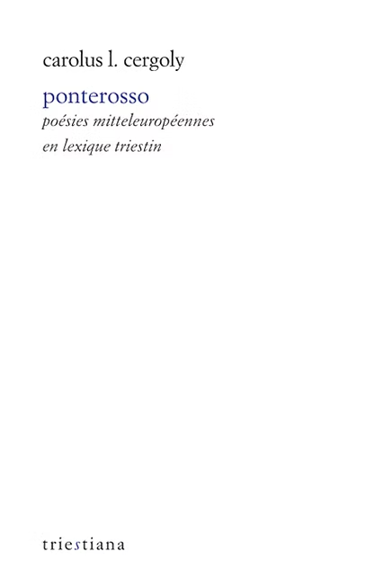

Carolus L. Cergoly, Ponterosso
Issu d’une famille autrichienne, hongroise, croate et italienne, Carolus L. Cergoly (1908-1987) incarne magnifiquement la Mitteleuropa. Né sujet de l’Empire, il en célèbre les valeurs d’humanité qui, avec la Première Guerre mondiale, sombrèrent dans la bestialité des nationalismes. Ponterosso, quintessence de son art poétique, est un triptyque, prenant l’Histoire à rebrousse-poil et l’élevant au rang de mythe : une exaltation de Trieste, « ombilic du monde » ; un terrible chant funèbre à la mémoire des victimes juives et slaves du fascisme ; et une lamentation sur la disparition d’un monde tant aimé, celui d’avant la Katastrophe de 1914.
Date de parution : novembre 2024
Traduit du triestin par Laurent Feneyrou et Pietro Milli
Postface de Laurent Feneyrou
320 pages
Prix : 22€